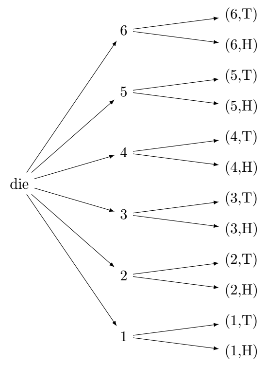

Chapter 1: Probability Theory
Section 1.2: What is Probability?
Every day we make decisions in the presence of uncertainty. A physician estimates the likelihood that a treatment will be successful. A weather forecaster predicts the chance of rain tomorrow. An insurance company determines the probability that a customer will file a claim, while an engineer estimates the probability that a component will fail before the end of its expected lifetime. Although the situations differ, they all involve the same fundamental question:
How likely is an event to occur?
Probability is the branch of mathematics that provides a systematic way to answer this question. Rather than predicting the exact outcome of a single event with certainty, probability provides a mathematical framework for describing the likelihood of possible outcomes.
Probability gives us a mathematical language for describing uncertainty and forms the foundation of statistical inference, risk assessment, scientific experimentation, finance, engineering, medicine, and many other disciplines.
In this chapter, we introduce the basic concepts of probability and develop the language that will be used throughout the remainder of the text.
Probability Defined
Definition: Probability
Probability is a numerical measure of the likelihood that an event will occur. A probability is always a number between 0 and 1, inclusive.
- A probability of 0 represents an impossible event.
- A probability of 1 represents a certain event.
- Probabilities between 0 and 1 represent varying degrees of likelihood.
For example,
- the probability that the sun will rise tomorrow is extremely close to 1;
- the probability of rolling an 8 on a standard six-sided die is 0;
- the probability of obtaining heads when tossing a fair coin is 0.5.
Although probability measures uncertainty, it does not eliminate it. Even an event with a probability of 0.95 may fail to occur, while an event with a probability of 0.05 may occasionally occur. Probability quantifies uncertainty—it does not remove it.
Random Experiments
Definition: Random Experiment
A random experiment is a process that produces one outcome from a collection of possible outcomes, where the specific outcome cannot be predicted with certainty before the experiment is performed.
Examples include:
- tossing a coin,
- rolling a die,
- selecting a student at random from a class,
- measuring the lifetime of a battery,
- observing tomorrow's weather.
Each performance of the experiment produces exactly one outcome.
Outcomes, Events, and the Sample Space
Definitions: Outcome, Event, and Sample Space
An outcome is a single possible result of a random experiment.
An event is any subset of the sample space. An event may contain one or more outcomes, and the empty set and the entire sample space are also events.
The sample space, denoted by \(S\), is the set of all possible outcomes of a specific random experiment.
Example 1
A fair six-sided die is rolled. Identify an outcome, the sample space, the event \(E\) of rolling an even number, and the event \(F\) of rolling a one.
Solution
An outcome is a possible result, such as rolling a 1.
The sample space is \(S=\{1,2,3,4,5,6\}\).
The event \(E=\{2,4,6\}\) represents rolling an even number.
The event \(F=\{1\}\) represents rolling a one.
Every event is a subset of the sample space.
Example 2
Consider a standard deck of 52 playing cards. Describe the sample space for each of the following experiments.
- You draw exactly one card and record its suit.
- You draw exactly one card and look at its color.
- You draw exactly one card and record its exact value.
Solution
The sample space represents all possible outcomes of the random experiment. If one card is drawn from a standard 52-card deck, \(S=\{\text{all 52 individual cards}\}\).
The sample space changes completely based on the specific random experiment you choose to run.
Experiment A: The sample space is \(S_A=\{\text{Spades},\text{Hearts},\text{Diamonds},\text{Clubs}\}\). The individual card names (like the 7 of Hearts) do not matter here. The only possible outcomes of your experiment are the four suits.
Experiment B: The sample space is \(S_B=\{\text{Black},\text{Red}\}\). You are filtering your outcomes strictly by color. You cannot draw a blue or green outcome.
Experiment C: The sample space is \(S_C=\{\text{Ace},2,3,4,5,6,7,8,9,10,\text{Jack},\text{Queen},\text{King}\}\). This lists every possible face value you could see on a single draw.
Equally Likely Outcomes
Many introductory examples assume that every outcome is equally likely to occur.
For example,
- each face of a fair die has probability \(\frac{1}{6}\);
- each card in a well-shuffled deck is equally likely to be drawn;
- heads and tails are equally likely when a fair coin is tossed, each has probability \(\frac{1}{2}\).
Classical Probability Formula
When outcomes are equally likely,
\[P(A)=\frac{n(A)}{n(S)}\]where \(n(A)\) is the number of outcomes in event \(A\) and \(n(S)\) is the number of outcomes in the sample space.
This classical definition provides a simple method for calculating probabilities.
Example 3
A fair die is rolled. Find the probability of rolling an even number.
Solution
When a fair die is rolled,
\[P(\text{even})=\frac{3}{6}=\frac{1}{2}.\]Relative Frequency
Many probabilities cannot be determined simply by counting outcomes.
Suppose a manufacturer wishes to determine the probability that a new electronic component fails within one year. Since the future cannot be observed directly, the probability is estimated by repeatedly observing similar components.
If an event \(A\) occurs \(x\) times in \(n\) repeated trials, its relative frequency is \(\frac{x}{n}\).
As the number of trials increases, the relative frequency tends to approach the theoretical probability.
For example, if a coin is tossed 100 times and heads occurs 48 times, the relative frequency of heads is \(\frac{48}{100}=0.48\).
If the experiment is repeated 10,000 times, the relative frequency may be 0.502, much closer to the theoretical probability of 0.5.
The Law of Large Numbers
The Law of Large Numbers
The Law of Large Numbers explains why relative frequencies become reliable estimates of probability. When a random experiment is repeated many times under identical conditions, the relative frequency of an event tends to approach its true probability.
This law does not imply that outcomes become evenly balanced in the short run. Instead, it describes the long-run behavior of repeated experiments.
For example, obtaining six consecutive heads does not make tails more likely on the next toss. Each toss remains independent, and the probability of heads is still one-half.
Complementary Events
For every event \(A\), there is a complementary event denoted by \(A_c\). An alternate notation for the complement is \(A'\).
The complement of \(A\) consists of every outcome in the sample space that is not contained in \(A\).
Complement Rule
Because either \(A\) occurs or its complement occurs — but never both —
\[P(A')=1-P(A).\]In a college football game, if ties are excluded, winning and losing are complementary events. If a team does not win, it loses. In professional football, winning and losing are not complementary events because a game can end in a tie.
Example 4
The probability that a randomly selected student owns a bicycle is 0.72. Find the probability that the student does not own a bicycle.
Solution
If the probability that a randomly selected student owns a bicycle is 0.72, then the probability that the student does not own a bicycle is
\[P(A_c)=1-0.72=0.28\]Basic Rules of Probability
Three Fundamental Properties
Every probability satisfies three fundamental properties.
- For every event \(A\), \[0 \leq P(A) \leq 1.\]
- The probability of the sample space is \[P(S)=1.\]
- The probability of the impossible event is \[P(\varnothing)=0.\]
Together with the complement rule, \(P(A')=1-P(A)\), these properties form the foundation upon which all later probability calculations are built.
Illustration
Often, it is advantageous to show the sample space visually. Some common methods include lists, tree diagrams, and tables.
Example 5
What is the sample space if we roll a single die then flip a single coin?
Solution
List
\[S=\{(1,H),(1,T),(2,H),(2,T),(3,H),(3,T),(4,H),(4,T),(5,H),(5,T),(6,H),(6,T)\}\]Table
| Die result | Heads (H) | Tails (T) |
|---|---|---|
| 1 | \((1,H)\) | \((1,T)\) |
| 2 | \((2,H)\) | \((2,T)\) |
| 3 | \((3,H)\) | \((3,T)\) |
| 4 | \((4,H)\) | \((4,T)\) |
| 5 | \((5,H)\) | \((5,T)\) |
| 6 | \((6,H)\) | \((6,T)\) |
Tree diagram

The list, table, and tree diagram all represent the same 12 possible outcomes.
Looking Ahead
The concepts introduced in this section establish the language of probability. In the next section, we will investigate relationships between events and develop methods for calculating probabilities involving unions, intersections, conditional probability, and independent events.
Probability is not a tool for predicting the outcome of a single event with certainty. Instead, it provides a mathematical framework for understanding uncertainty. By identifying all possible outcomes, assigning probabilities to events, and studying the behavior of repeated experiments, probability enables us to make informed decisions in situations where certainty is impossible.